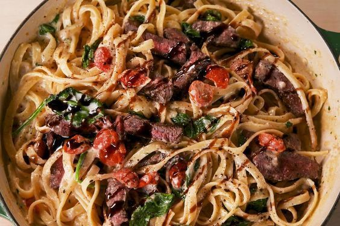

Creamy Steak Fettuccine

Description
If you've ever thought " How can I make even Chef Gordon Ramsay experience such a delicacy
cuisine that he'd never forget? Well look no further.
This Creamy Steak Fettuccine is so full of flavor that even vegetarians cant help but
to salivate.
Ingredients
- Kosher salt
- 12 oz. fettuccine
- 1 lb. sirloin steak
- 2 tbsp. vegetable oil
- Freshly ground black pepper
- 2 tbsp. butter
- 2 cloves garlic, minced
- 2 tbsp. all–purpose flour
- 2 c. milk
- 1/2 c. freshly grated Parmesan
- 1 tbsp. freshly chopped parsley
- 1 1/2 c. halved cherry tomatoes
- 4 c. baby spinach
- 2 tbsp. balsamic glaze (1/3 c. balsamic vinegar simmered for about 10 minutes)
Directions
-
In a large pot of boiling salted water, cook pasta until al dente according to package directions.
Reserve ½ cup pasta water before draining. Return pasta to pot.
-
Coat both sides of steak with oil and season generously with salt and pepper.
In a large skillet over medium–high heat, cook steak to desired doneness, 4 minutes per side for medium–rare.
Transfer to a plate to let rest for 10 minutes. Thinly slice steak.
-
In skillet, melt butter over medium heat. Add garlic and cook until softened and fragrant,, 1 to 2 minutes.
Whisk in flour and cook 1 minute more, then slowly add milk, whisking to break up lumps, and simmer until thickened, 5 minutes.
Add Parmesan and parsley and season with salt and pepper. Add tomatoes and cook until bursting, 2 to 3 minutes.
-
Add cooked pasta and ¼ cup reserved pasta water to skillet and toss to combine, adding more pasta water as needed..
Add spinach and toss until wilted.
-
Top with sliced steak and drizzle with balsamic glaze.
Back to Home Page